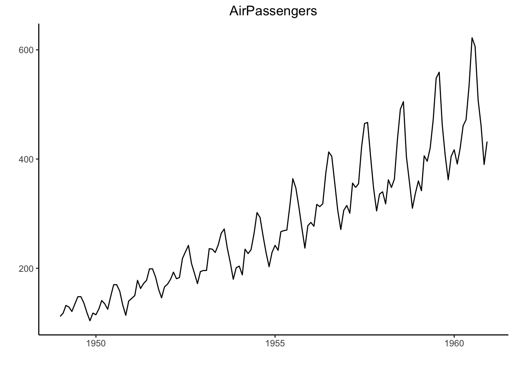

Chapter 7 Data transformation 1
7.1 Data 변환 전에
- plyr 패키지는 BASE 패키지 이며, R언어로 작성됨
- dplyr 패키지는 C로 작성되었으며, 속도가 빠름.
- 두패키지 모두 해들리 위컴에 의해 만들어짐. dplyr 패키지가 최근 많이 선호됨.
| 데이터셋 | 의미 |
|---|---|
| flights | 2013년 뉴욕을 출발하는 모든 비행기에 대한 시간 데이터. 날씨, 항공사, 비행기 등의 메타정보를 포함하고 있음 |
| AirPassenger | 1949년부터 1960년까지의 항공기 승객수 |
| airquality | 1973년 5월 부터 9월까지의 뉴욕 대기 오염 정도에 대한 기록 |
| cars | 자동차의 주행 속도에 따른 제공거리 |
| mtcars | 1974년 미국 모터 트렌드 매거진에 실린 32개 자동차에 대해 연료 효율을 비롯한 10가지 특징을 기록 |
| Titanic | 타이타닉 호의 생존자 정보를 호실(1등식, 2등실, 3등실), 성별, 나이 생존 여부로 정리 |
| InsectSprays | 6종류의 살충제를 사용했을 때 각 살충제에 대해 살아남은 벌래의수 |
| Orange | 오렌지 나무의 종류, 연령, 둘레 |
| swiss | 1888년경 프랑스어를 사용하는 스위스 내 47개 주의 출산율과 사회 경제적 지표(농헙 종사자 비율, 군입대 시험성적, 교육등) |
7.2 apply 계열의 함수들
- 벡터,행렬또는데이터 프레임에 임의의 함수를 적용한 결과를 얻기 위한 함수
- 벡터 연산을 수행하므로 수행속도가 빠름
- apply 계열 함수로 출력되는 결과 값은 벡터, 리스트, 행렬이다
| 함수 | 설명 | 다른함수와 비교했을 때의 특징 |
|---|---|---|
| apply( ) | 배열/행렬/데이터프레임에 주어진 함수를 적용한 뒤 그 결과를 벡터/배열/리스트로 반환 | 배열/행렬/데이터 프레임 |
| lapply( ) | 벡터/리스트에 함수를 적용하여 그 결과를 리스트로 반환 | 결과가 리스트 |
| sapply( ) | lapply와 유사하지만 결과를 벡터/행렬/배열로 반환 | 결과가 벡터, 행렬 또는 배열 |
| mapply( ) | sapply의 확장된 버전으로, 여러 개의 벡터 또는 리스트를 인자로 받아 함수에 각 데이터의 첫째 요소들을 적용한 결과, 둘째 요소들을 적용한 결과, 셋째 요소들을 적용한 결과 등을 반환 | 여러 데이터를 함수의 인자로 적용 |
| tapply( ) | 벡터에 있는 데이터를 특정 기준에 따라 그룹으로 묶은 뒤 각 그룹마다 주어진 함수를 작용하고 그 결과를 반환 | 데이터를 그룹으로 묶은 뒤 함수를 적용 |
7.2.1 apply( )
- 행과 열방향으로 함수 적용가능
- 배열,행렬,데이터프레임 데이터셋에 적용가능,벡터와 리스트에 적용불가
- 리턴되는 데이터 셋은 벡터, 행렬, 리스트이며 데이터 프레임으로는 불가
apply (
X, # 배열 또는 행렬
MARGIN, # 함수를 적용하는 방향. 1은 행방향, 2는 열 방향
# C(1,2)는 행과 열 방향 모두를 의미
FUN # 적용할 함수
)
반환 값은 FUN이 길이 1인 벡터들을 반환하는 경우 벡터, 1보다 큰 벡터들을 반한한 경우 행렬, 서로 같은 길이의 벡터를 반환한 경우 리스트다.d <- matrix(1:9, ncol=3)
d## [,1] [,2] [,3]
## [1,] 1 4 7
## [2,] 2 5 8
## [3,] 3 6 9- 행의 합
apply(d, 1, sum)## [1] 12 15 18- 행단위의 분위수 구하기
apply(d, 1, stats::quantile)## [,1] [,2] [,3]
## 0% 1.0 2.0 3.0
## 25% 2.5 3.5 4.5
## 50% 4.0 5.0 6.0
## 75% 5.5 6.5 7.5
## 100% 7.0 8.0 9.0- 각 열의 중앙값
apply(d, 2, median)## [1] 2 5 8- iris data의 각 컬럼별 통 합 계산
head(iris)## Sepal.Length Sepal.Width Petal.Length Petal.Width Species
## 1 5.1 3.5 1.4 0.2 setosa
## 2 4.9 3.0 1.4 0.2 setosa
## 3 4.7 3.2 1.3 0.2 setosa
## 4 4.6 3.1 1.5 0.2 setosa
## 5 5.0 3.6 1.4 0.2 setosa
## 6 5.4 3.9 1.7 0.4 setosaapply(iris[,1:4], 2, sum)## Sepal.Length Sepal.Width Petal.Length Petal.Width
## 876.5 458.6 563.7 179.9- 항공기 들의 출발 및 도착 평균 지연 시간
library("nycflights13")
str(flights)## Classes 'tbl_df', 'tbl' and 'data.frame': 336776 obs. of 19 variables:
## $ year : int 2013 2013 2013 2013 2013 2013 2013 2013 2013 2013 ...
## $ month : int 1 1 1 1 1 1 1 1 1 1 ...
## $ day : int 1 1 1 1 1 1 1 1 1 1 ...
## $ dep_time : int 517 533 542 544 554 554 555 557 557 558 ...
## $ sched_dep_time: int 515 529 540 545 600 558 600 600 600 600 ...
## $ dep_delay : num 2 4 2 -1 -6 -4 -5 -3 -3 -2 ...
## $ arr_time : int 830 850 923 1004 812 740 913 709 838 753 ...
## $ sched_arr_time: int 819 830 850 1022 837 728 854 723 846 745 ...
## $ arr_delay : num 11 20 33 -18 -25 12 19 -14 -8 8 ...
## $ carrier : chr "UA" "UA" "AA" "B6" ...
## $ flight : int 1545 1714 1141 725 461 1696 507 5708 79 301 ...
## $ tailnum : chr "N14228" "N24211" "N619AA" "N804JB" ...
## $ origin : chr "EWR" "LGA" "JFK" "JFK" ...
## $ dest : chr "IAH" "IAH" "MIA" "BQN" ...
## $ air_time : num 227 227 160 183 116 150 158 53 140 138 ...
## $ distance : num 1400 1416 1089 1576 762 ...
## $ hour : num 5 5 5 5 6 5 6 6 6 6 ...
## $ minute : num 15 29 40 45 0 58 0 0 0 0 ...
## $ time_hour : POSIXct, format: "2013-01-01 05:00:00" "2013-01-01 05:00:00" ...apply(flights[,c("dep_delay","arr_delay")],2, mean, na.rm=TRUE)## dep_delay arr_delay
## 12.639070 6.8953777.2.2 행 또는 열의 합 또는 평균 계산 함수
- rowSums( ), rowMeans( ), colSums( ), colMeans( ) 함수 제공
- NA 값을 제거하지 않고 연산하기 때문에 제거 시 na.rm = TRUE 설정 필요
colSums(iris[, 1:4])## Sepal.Length Sepal.Width Petal.Length Petal.Width
## 876.5 458.6 563.7 179.97.2.3 lapply( )함수
- 행, 열별 연산 방향을 선택하는 옵션이 없음
- 벡터, 행렬은 원소별 함수 전달
- 리스트와 데이터 프레임은 각 key별로 함수 전달, 원소별 전달 불가
- 리스트를 반환
lapply(
X, # 벡터, 리스트, 표현식 또는 데이터 프레임
FUN, # 적용할 함수
... # 추가 인자. 이 인자들은 FUN에 전달된다.
)
반환값은 X와 같은 길이의 리스트다.(result <- lapply(1:3, function(x) { x*2 }))## [[1]]
## [1] 2
##
## [[2]]
## [1] 4
##
## [[3]]
## [1] 6result[[1]]## [1] 2- laaply 함수를 사용한 리스트의 key별 연산
(x <- list(a=1:3, b=4:6))## $a
## [1] 1 2 3
##
## $b
## [1] 4 5 6lapply(x, mean)## $a
## [1] 2
##
## $b
## [1] 5- lapply 함수를 사용한 데이터 프레임의 key(컬럼) 별 연산
lapply(iris[,1:4], mean)## $Sepal.Length
## [1] 5.843333
##
## $Sepal.Width
## [1] 3.057333
##
## $Petal.Length
## [1] 3.758
##
## $Petal.Width
## [1] 1.199333colMeans(iris[,1:4])## Sepal.Length Sepal.Width Petal.Length Petal.Width
## 5.843333 3.057333 3.758000 1.1993337.2.4 unlist 함수
- 리스트 구조를 다시 벡터로 변환
- recursive = TRUE 가 디폴트, 리스트 내 리스트도 벡터로 변환
- use.names = TRUE가 디폴트, 리스트 내 key 이름이 벡터의 각 쉘의 이름으로 전달
unlinst(
X, # R 객체. 보통 리스트 또는 벡터
recursive = FALSE, # X에 포함된 리스트 역시 재귀적으로 변환할지 여부
use.names=TRUE # 리스트 내 값의 이름을 보존할지 여부
)
반환값은 벡터- unlist 함수를 이용해 lapply 함수의 결과인 리스트를 다시 벡터로 전환
unlist(result)## [1] 2 4 6x <- list(data.frame(name="foo", value=1),
data.frame(name="bar", value=2))
x## [[1]]
## name value
## 1 foo 1
##
## [[2]]
## name value
## 1 bar 2unlist(x) ## name value name value
## 1 1 1 2do.call(rbind, x)## name value
## 1 foo 1
## 2 bar 27.2.5 do.call 함수
- 함수에 인수를 리스트 형식으로 전달 시 사용
do.call()을 이용하면 리스트의 key 별로 함수에 인자로 전달 가능
do.call ( what, # 호출할 함수 args, # 함수에 전달할 인자의 리스트 ) 반환값은 한수 호출 결과
#lapply 로 반환된 리스트 구조를 do.call() 을 이용하여 데이터 프레임으로 변경
data.frame(do.call(cbind, lapply(iris[,1:4], mean)))## Sepal.Length Sepal.Width Petal.Length Petal.Width
## 1 5.843333 3.057333 3.758 1.1993337.2.6 sapply 함수
- lapply()와 유사하지만 리스트 대신 행렬, 벡터의 데이터 타입으로 반환
- 따라서 함수의 반환값에 여러 데이터 타입이 섞여 있으면 안된다
sapply (
X, # 벡터, 리스트, 표현식 또는 데이터 프레임
FUN, # 적용할 함수
..., # 추가인자. 이 인자들은 FUN에 전달된다.
)
반환 값은 FUN의 결과가 길이 1인 벡터들이면 벡터, 길이가 1보다 큰 벡터들이면 행렬이다.lapply(iris[,1:4], mean)## $Sepal.Length
## [1] 5.843333
##
## $Sepal.Width
## [1] 3.057333
##
## $Petal.Length
## [1] 3.758
##
## $Petal.Width
## [1] 1.199333sapply(iris[,1:4], mean)## Sepal.Length Sepal.Width Petal.Length Petal.Width
## 5.843333 3.057333 3.758000 1.199333class(sapply(iris[,1:4], mean)) # numeric 은 숫자를 저장한 벡터를 의미함## [1] "numeric"- sapply()를 사용하여 데이터 프레임의 각 운소 별 조건 적용
y <- sapply(iris[,1:4], function(x) { x > 3})
class(y)## [1] "matrix"head(y)## Sepal.Length Sepal.Width Petal.Length Petal.Width
## [1,] TRUE TRUE FALSE FALSE
## [2,] TRUE FALSE FALSE FALSE
## [3,] TRUE TRUE FALSE FALSE
## [4,] TRUE TRUE FALSE FALSE
## [5,] TRUE TRUE FALSE FALSE
## [6,] TRUE TRUE FALSE FALSE7.2.7 tapply 함수
그룹별로 함수를 적용하기 위한 함수
tapply( X, #벡터 INDEX, #데이터를 그룹으로 묶을 색인. 팩터를 지정해야 하며 팩터가 아닌 타입이 지정되면 #펙터로 형 변현된다. FUN, # 각 그룹마다 적용할 함수 ..., #추가인자. 이 인자들은 FUN에 전달된다. 반환값은 배열 입니다. )rep()의 결과 값을 그룹 색인 값으로 사용
tapply(1:10, rep(1,10), sum)## 1
## 55- 불리언 색인 값을 그룹 색인 값으로 사용
tapply(1:10, 1:10 %% 2 == 1, sum)## FALSE TRUE
## 30 25- 데이터프레임의 컬럼 값을 그룹 색인으로 사용
tapply(iris$Sepal.Length, iris$Species, mean)## setosa versicolor virginica
## 5.006 5.936 6.5887.3 dplyr 패키지
| 함수명 | 함수설명 |
|---|---|
| filter( ) | 값을 기준으로 선택 |
| arrange( ) | 행을 정렬 하는 함수 |
| select( ) | 이름으로 변수를 선택 |
| mutate( ) | 새로운 컬럼을 생성 |
| summarize( ) | 집계함수 |
7.3.1 flights 데이터셋의 간략한 설명
- nycflights13 패키지 있는 데이터셋
- flights 데이터셋 이외에, 연관된 항공사/공항 등의 복합적인 데이터셋을 가지고 있음.
- R로 관계형 데이터 조회 및 처리 하는 예제로 널리 사용됨.
| 컬럼명 | 컬럼설명 |
|---|---|
| year | 년 |
| month | 월 |
| day | 일 |
| dep_time | 실제출발시간 |
| sched_dep_time | 예정출발시간 |
| dep_delay | 출발지연시간 |
| arr_time | 도착시간 |
| sched_arr_time | 예정도착시간 |
| arr_delay | 도착지연시간 |
| carrier | 운송자 |
| flight | 비행번호 |
| tailnum | 꼬리번호 |
| origin | 출발지 |
| dest | 도착지 |
| air_time | 비행시간 |
| distance | 거리 |
| hour | 시 |
| minute | 분 |
| time_hour | 초 |
library("tidyverse")## ── Attaching packages ───────────────────────────────────────────────────────────────────────────────────────── tidyverse 1.2.1 ──## ✔ ggplot2 3.2.1 ✔ purrr 0.3.2
## ✔ tibble 2.1.3 ✔ dplyr 0.8.3
## ✔ tidyr 1.0.0 ✔ stringr 1.4.0
## ✔ readr 1.3.1 ✔ forcats 0.4.0## ── Conflicts ──────────────────────────────────────────────────────────────────────────────────────────── tidyverse_conflicts() ──
## ✖ dplyr::filter() masks stats::filter()
## ✖ dplyr::lag() masks stats::lag()library("nycflights13")7.3.2 Filter 사용하기
- filter() 함수의 인수들은 “and”로 결합됩니다. 모든 표현식이 “참” 일때 출력됩니다.
flights## # A tibble: 336,776 x 19
## year month day dep_time sched_dep_time dep_delay arr_time
## <int> <int> <int> <int> <int> <dbl> <int>
## 1 2013 1 1 517 515 2 830
## 2 2013 1 1 533 529 4 850
## 3 2013 1 1 542 540 2 923
## 4 2013 1 1 544 545 -1 1004
## 5 2013 1 1 554 600 -6 812
## 6 2013 1 1 554 558 -4 740
## 7 2013 1 1 555 600 -5 913
## 8 2013 1 1 557 600 -3 709
## 9 2013 1 1 557 600 -3 838
## 10 2013 1 1 558 600 -2 753
## # … with 336,766 more rows, and 12 more variables: sched_arr_time <int>,
## # arr_delay <dbl>, carrier <chr>, flight <int>, tailnum <chr>,
## # origin <chr>, dest <chr>, air_time <dbl>, distance <dbl>, hour <dbl>,
## # minute <dbl>, time_hour <dttm>filter(flights, month == 2, day ==1)## # A tibble: 926 x 19
## year month day dep_time sched_dep_time dep_delay arr_time
## <int> <int> <int> <int> <int> <dbl> <int>
## 1 2013 2 1 456 500 -4 652
## 2 2013 2 1 520 525 -5 816
## 3 2013 2 1 527 530 -3 837
## 4 2013 2 1 532 540 -8 1007
## 5 2013 2 1 540 540 0 859
## 6 2013 2 1 552 600 -8 714
## 7 2013 2 1 552 600 -8 919
## 8 2013 2 1 552 600 -8 655
## 9 2013 2 1 553 600 -7 833
## 10 2013 2 1 553 600 -7 821
## # … with 916 more rows, and 12 more variables: sched_arr_time <int>,
## # arr_delay <dbl>, carrier <chr>, flight <int>, tailnum <chr>,
## # origin <chr>, dest <chr>, air_time <dbl>, distance <dbl>, hour <dbl>,
## # minute <dbl>, time_hour <dttm>jan3 <- filter(flights, month == 1, day == 3)
(dec22 <- filter(flights, month == 12, day == 22))## # A tibble: 895 x 19
## year month day dep_time sched_dep_time dep_delay arr_time
## <int> <int> <int> <int> <int> <dbl> <int>
## 1 2013 12 22 7 2359 8 438
## 2 2013 12 22 23 2245 98 124
## 3 2013 12 22 32 2359 33 513
## 4 2013 12 22 455 500 -5 645
## 5 2013 12 22 536 510 26 821
## 6 2013 12 22 538 540 -2 831
## 7 2013 12 22 549 550 -1 1027
## 8 2013 12 22 551 551 0 838
## 9 2013 12 22 552 600 -8 654
## 10 2013 12 22 555 600 -5 755
## # … with 885 more rows, and 12 more variables: sched_arr_time <int>,
## # arr_delay <dbl>, carrier <chr>, flight <int>, tailnum <chr>,
## # origin <chr>, dest <chr>, air_time <dbl>, distance <dbl>, hour <dbl>,
## # minute <dbl>, time_hour <dttm>7.3.3 Logical 연산자
– 11월 또는 12월에 출발한 항공편 모두 찾기
filter(flights, month == 11 | month == 12)## # A tibble: 55,403 x 19
## year month day dep_time sched_dep_time dep_delay arr_time
## <int> <int> <int> <int> <int> <dbl> <int>
## 1 2013 11 1 5 2359 6 352
## 2 2013 11 1 35 2250 105 123
## 3 2013 11 1 455 500 -5 641
## 4 2013 11 1 539 545 -6 856
## 5 2013 11 1 542 545 -3 831
## 6 2013 11 1 549 600 -11 912
## 7 2013 11 1 550 600 -10 705
## 8 2013 11 1 554 600 -6 659
## 9 2013 11 1 554 600 -6 826
## 10 2013 11 1 554 600 -6 749
## # … with 55,393 more rows, and 12 more variables: sched_arr_time <int>,
## # arr_delay <dbl>, carrier <chr>, flight <int>, tailnum <chr>,
## # origin <chr>, dest <chr>, air_time <dbl>, distance <dbl>, hour <dbl>,
## # minute <dbl>, time_hour <dttm>- 2시간 이상 도착이 지연된 항공사
filter(flights, arr_delay >= 120, dep_delay >= 120)## # A tibble: 8,482 x 19
## year month day dep_time sched_dep_time dep_delay arr_time
## <int> <int> <int> <int> <int> <dbl> <int>
## 1 2013 1 1 848 1835 853 1001
## 2 2013 1 1 957 733 144 1056
## 3 2013 1 1 1114 900 134 1447
## 4 2013 1 1 1815 1325 290 2120
## 5 2013 1 1 1842 1422 260 1958
## 6 2013 1 1 1856 1645 131 2212
## 7 2013 1 1 1934 1725 129 2126
## 8 2013 1 1 1938 1703 155 2109
## 9 2013 1 1 1942 1705 157 2124
## 10 2013 1 1 2006 1630 216 2230
## # … with 8,472 more rows, and 12 more variables: sched_arr_time <int>,
## # arr_delay <dbl>, carrier <chr>, flight <int>, tailnum <chr>,
## # origin <chr>, dest <chr>, air_time <dbl>, distance <dbl>, hour <dbl>,
## # minute <dbl>, time_hour <dttm>7.3.4 arrange 를 이용한 정렬
- 년/월/일 을 기준으로 flights 를 정렬 합니다.
arrange(flights, year, month, day)## # A tibble: 336,776 x 19
## year month day dep_time sched_dep_time dep_delay arr_time
## <int> <int> <int> <int> <int> <dbl> <int>
## 1 2013 1 1 517 515 2 830
## 2 2013 1 1 533 529 4 850
## 3 2013 1 1 542 540 2 923
## 4 2013 1 1 544 545 -1 1004
## 5 2013 1 1 554 600 -6 812
## 6 2013 1 1 554 558 -4 740
## 7 2013 1 1 555 600 -5 913
## 8 2013 1 1 557 600 -3 709
## 9 2013 1 1 557 600 -3 838
## 10 2013 1 1 558 600 -2 753
## # … with 336,766 more rows, and 12 more variables: sched_arr_time <int>,
## # arr_delay <dbl>, carrier <chr>, flight <int>, tailnum <chr>,
## # origin <chr>, dest <chr>, air_time <dbl>, distance <dbl>, hour <dbl>,
## # minute <dbl>, time_hour <dttm>- desc() 함수를 이용하여 내림차순으로 정렬 합니다.
arrange(flights, desc(dep_delay))## # A tibble: 336,776 x 19
## year month day dep_time sched_dep_time dep_delay arr_time
## <int> <int> <int> <int> <int> <dbl> <int>
## 1 2013 1 9 641 900 1301 1242
## 2 2013 6 15 1432 1935 1137 1607
## 3 2013 1 10 1121 1635 1126 1239
## 4 2013 9 20 1139 1845 1014 1457
## 5 2013 7 22 845 1600 1005 1044
## 6 2013 4 10 1100 1900 960 1342
## 7 2013 3 17 2321 810 911 135
## 8 2013 6 27 959 1900 899 1236
## 9 2013 7 22 2257 759 898 121
## 10 2013 12 5 756 1700 896 1058
## # … with 336,766 more rows, and 12 more variables: sched_arr_time <int>,
## # arr_delay <dbl>, carrier <chr>, flight <int>, tailnum <chr>,
## # origin <chr>, dest <chr>, air_time <dbl>, distance <dbl>, hour <dbl>,
## # minute <dbl>, time_hour <dttm>- 데이터 프레임 arrange 함수를 이용해 정렬시 NA 값은 항상 마지막에
df <- tibble(x = c(5,2,NA))
arrange(df,x)## # A tibble: 3 x 1
## x
## <dbl>
## 1 2
## 2 5
## 3 NAarrange(df,desc(x))## # A tibble: 3 x 1
## x
## <dbl>
## 1 5
## 2 2
## 3 NA7.3.4.1 Exercise
- dep_time 이 NA 인것부터 보여지도록 정렬
arrange(flights, desc(is.na(dep_time)), dep_time)## # A tibble: 336,776 x 19
## year month day dep_time sched_dep_time dep_delay arr_time
## <int> <int> <int> <int> <int> <dbl> <int>
## 1 2013 1 1 NA 1630 NA NA
## 2 2013 1 1 NA 1935 NA NA
## 3 2013 1 1 NA 1500 NA NA
## 4 2013 1 1 NA 600 NA NA
## 5 2013 1 2 NA 1540 NA NA
## 6 2013 1 2 NA 1620 NA NA
## 7 2013 1 2 NA 1355 NA NA
## 8 2013 1 2 NA 1420 NA NA
## 9 2013 1 2 NA 1321 NA NA
## 10 2013 1 2 NA 1545 NA NA
## # … with 336,766 more rows, and 12 more variables: sched_arr_time <int>,
## # arr_delay <dbl>, carrier <chr>, flight <int>, tailnum <chr>,
## # origin <chr>, dest <chr>, air_time <dbl>, distance <dbl>, hour <dbl>,
## # minute <dbl>, time_hour <dttm>- 가장빠른 비행기 순으로 정렬
fastest_flights <- mutate(flights, mph = distance / air_time * 60)
fastest_flights <- select(
fastest_flights, mph, distance, air_time,
flight, origin, dest, year, month, day
)
arrange(fastest_flights, desc(mph))## # A tibble: 336,776 x 9
## mph distance air_time flight origin dest year month day
## <dbl> <dbl> <dbl> <int> <chr> <chr> <int> <int> <int>
## 1 703. 762 65 1499 LGA ATL 2013 5 25
## 2 650. 1008 93 4667 EWR MSP 2013 7 2
## 3 648 594 55 4292 EWR GSP 2013 5 13
## 4 641. 748 70 3805 EWR BNA 2013 3 23
## 5 591. 1035 105 1902 LGA PBI 2013 1 12
## 6 564 1598 170 315 JFK SJU 2013 11 17
## 7 557. 1598 172 707 JFK SJU 2013 2 21
## 8 556. 1623 175 936 JFK STT 2013 11 17
## 9 554. 1598 173 347 JFK SJU 2013 11 16
## 10 554. 1598 173 1503 JFK SJU 2013 11 16
## # … with 336,766 more rows7.3.5 select 를 이용한 데이터 선택
7.3.5.1 컬럼 이름으로 열 선택
select(flights, year, month, day)## # A tibble: 336,776 x 3
## year month day
## <int> <int> <int>
## 1 2013 1 1
## 2 2013 1 1
## 3 2013 1 1
## 4 2013 1 1
## 5 2013 1 1
## 6 2013 1 1
## 7 2013 1 1
## 8 2013 1 1
## 9 2013 1 1
## 10 2013 1 1
## # … with 336,766 more rows- year 와 day 사이에 있는 모든 컬럼 조회 하기
select(flights, year:day)## # A tibble: 336,776 x 3
## year month day
## <int> <int> <int>
## 1 2013 1 1
## 2 2013 1 1
## 3 2013 1 1
## 4 2013 1 1
## 5 2013 1 1
## 6 2013 1 1
## 7 2013 1 1
## 8 2013 1 1
## 9 2013 1 1
## 10 2013 1 1
## # … with 336,766 more rows7.3.6 year 와 day 사이에 있는 컬럼 제외
select(flights, -(year:day))## # A tibble: 336,776 x 16
## dep_time sched_dep_time dep_delay arr_time sched_arr_time arr_delay
## <int> <int> <dbl> <int> <int> <dbl>
## 1 517 515 2 830 819 11
## 2 533 529 4 850 830 20
## 3 542 540 2 923 850 33
## 4 544 545 -1 1004 1022 -18
## 5 554 600 -6 812 837 -25
## 6 554 558 -4 740 728 12
## 7 555 600 -5 913 854 19
## 8 557 600 -3 709 723 -14
## 9 557 600 -3 838 846 -8
## 10 558 600 -2 753 745 8
## # … with 336,766 more rows, and 10 more variables: carrier <chr>,
## # flight <int>, tailnum <chr>, origin <chr>, dest <chr>, air_time <dbl>,
## # distance <dbl>, hour <dbl>, minute <dbl>, time_hour <dttm>- select 함수내에서 사용 할 수 있는 도움이 함수들은 아래와 같습니다.
| 함수명 | 설명 |
|---|---|
| starts_with(“abc”) | “abc”로 시작하는 패턴찾기 |
| ends_with(“xyz”) | “xyz”로 끝나는 패턴찾기 |
| contains(“ijk”) | “ijk”를 가지고 있는 패턴찾기 |
| matches(“(.)\1”) | 정규표현식과 일치하는 패턴찾기 |
| num_range(“x”,1:3) | x1,x2,x3 에대한 패턴찾기 |
- select( ) 함수컬럼 명을 변경하는데 사용 할수도 있지만, 명시하지 않은 컬럼은 제외 되기 때문에 rename( ) 함수를 사용해서 컬럼명을 변경 합니다.
flights## # A tibble: 336,776 x 19
## year month day dep_time sched_dep_time dep_delay arr_time
## <int> <int> <int> <int> <int> <dbl> <int>
## 1 2013 1 1 517 515 2 830
## 2 2013 1 1 533 529 4 850
## 3 2013 1 1 542 540 2 923
## 4 2013 1 1 544 545 -1 1004
## 5 2013 1 1 554 600 -6 812
## 6 2013 1 1 554 558 -4 740
## 7 2013 1 1 555 600 -5 913
## 8 2013 1 1 557 600 -3 709
## 9 2013 1 1 557 600 -3 838
## 10 2013 1 1 558 600 -2 753
## # … with 336,766 more rows, and 12 more variables: sched_arr_time <int>,
## # arr_delay <dbl>, carrier <chr>, flight <int>, tailnum <chr>,
## # origin <chr>, dest <chr>, air_time <dbl>, distance <dbl>, hour <dbl>,
## # minute <dbl>, time_hour <dttm>select(flights, tail_num = tailnum)## # A tibble: 336,776 x 1
## tail_num
## <chr>
## 1 N14228
## 2 N24211
## 3 N619AA
## 4 N804JB
## 5 N668DN
## 6 N39463
## 7 N516JB
## 8 N829AS
## 9 N593JB
## 10 N3ALAA
## # … with 336,766 more rows- rename( )을 사용해서 원하는 컬럼명을 변경합니다.
rename(flights, tail_num = tailnum, flight_distance = distance)## # A tibble: 336,776 x 19
## year month day dep_time sched_dep_time dep_delay arr_time
## <int> <int> <int> <int> <int> <dbl> <int>
## 1 2013 1 1 517 515 2 830
## 2 2013 1 1 533 529 4 850
## 3 2013 1 1 542 540 2 923
## 4 2013 1 1 544 545 -1 1004
## 5 2013 1 1 554 600 -6 812
## 6 2013 1 1 554 558 -4 740
## 7 2013 1 1 555 600 -5 913
## 8 2013 1 1 557 600 -3 709
## 9 2013 1 1 557 600 -3 838
## 10 2013 1 1 558 600 -2 753
## # … with 336,766 more rows, and 12 more variables: sched_arr_time <int>,
## # arr_delay <dbl>, carrier <chr>, flight <int>, tail_num <chr>,
## # origin <chr>, dest <chr>, air_time <dbl>, flight_distance <dbl>,
## # hour <dbl>, minute <dbl>, time_hour <dttm>- Time 으로 끝나는 컬럼들만 조회 합니다.
flights %>% select(ends_with("Time"))## # A tibble: 336,776 x 5
## dep_time sched_dep_time arr_time sched_arr_time air_time
## <int> <int> <int> <int> <dbl>
## 1 517 515 830 819 227
## 2 533 529 850 830 227
## 3 542 540 923 850 160
## 4 544 545 1004 1022 183
## 5 554 600 812 837 116
## 6 554 558 740 728 150
## 7 555 600 913 854 158
## 8 557 600 709 723 53
## 9 557 600 838 846 140
## 10 558 600 753 745 138
## # … with 336,766 more rows- 필요한 것만 먼저 출력하되, 남은 컬럼을 자동으로 포함하여 출력
select(flights, origin, dest, everything())## # A tibble: 336,776 x 19
## origin dest year month day dep_time sched_dep_time dep_delay
## <chr> <chr> <int> <int> <int> <int> <int> <dbl>
## 1 EWR IAH 2013 1 1 517 515 2
## 2 LGA IAH 2013 1 1 533 529 4
## 3 JFK MIA 2013 1 1 542 540 2
## 4 JFK BQN 2013 1 1 544 545 -1
## 5 LGA ATL 2013 1 1 554 600 -6
## 6 EWR ORD 2013 1 1 554 558 -4
## 7 EWR FLL 2013 1 1 555 600 -5
## 8 LGA IAD 2013 1 1 557 600 -3
## 9 JFK MCO 2013 1 1 557 600 -3
## 10 LGA ORD 2013 1 1 558 600 -2
## # … with 336,766 more rows, and 11 more variables: arr_time <int>,
## # sched_arr_time <int>, arr_delay <dbl>, carrier <chr>, flight <int>,
## # tailnum <chr>, air_time <dbl>, distance <dbl>, hour <dbl>,
## # minute <dbl>, time_hour <dttm>7.3.7 mutate 로 새로운 컬럼 생성
flights## # A tibble: 336,776 x 19
## year month day dep_time sched_dep_time dep_delay arr_time
## <int> <int> <int> <int> <int> <dbl> <int>
## 1 2013 1 1 517 515 2 830
## 2 2013 1 1 533 529 4 850
## 3 2013 1 1 542 540 2 923
## 4 2013 1 1 544 545 -1 1004
## 5 2013 1 1 554 600 -6 812
## 6 2013 1 1 554 558 -4 740
## 7 2013 1 1 555 600 -5 913
## 8 2013 1 1 557 600 -3 709
## 9 2013 1 1 557 600 -3 838
## 10 2013 1 1 558 600 -2 753
## # … with 336,766 more rows, and 12 more variables: sched_arr_time <int>,
## # arr_delay <dbl>, carrier <chr>, flight <int>, tailnum <chr>,
## # origin <chr>, dest <chr>, air_time <dbl>, distance <dbl>, hour <dbl>,
## # minute <dbl>, time_hour <dttm>flights_sm <- select(flights, year:day, ends_with("delay"),
distance,
air_time
)
mutate(flights_sm,
gain = dep_delay - arr_delay,
speed = distance / air_time * 60
)## # A tibble: 336,776 x 9
## year month day dep_delay arr_delay distance air_time gain speed
## <int> <int> <int> <dbl> <dbl> <dbl> <dbl> <dbl> <dbl>
## 1 2013 1 1 2 11 1400 227 -9 370.
## 2 2013 1 1 4 20 1416 227 -16 374.
## 3 2013 1 1 2 33 1089 160 -31 408.
## 4 2013 1 1 -1 -18 1576 183 17 517.
## 5 2013 1 1 -6 -25 762 116 19 394.
## 6 2013 1 1 -4 12 719 150 -16 288.
## 7 2013 1 1 -5 19 1065 158 -24 404.
## 8 2013 1 1 -3 -14 229 53 11 259.
## 9 2013 1 1 -3 -8 944 140 5 405.
## 10 2013 1 1 -2 8 733 138 -10 319.
## # … with 336,766 more rowsmutate(flights_sm,
gain = dep_delay - arr_delay,
hours = air_time / 60,
gain_per_hour = gain / hours
)## # A tibble: 336,776 x 10
## year month day dep_delay arr_delay distance air_time gain hours
## <int> <int> <int> <dbl> <dbl> <dbl> <dbl> <dbl> <dbl>
## 1 2013 1 1 2 11 1400 227 -9 3.78
## 2 2013 1 1 4 20 1416 227 -16 3.78
## 3 2013 1 1 2 33 1089 160 -31 2.67
## 4 2013 1 1 -1 -18 1576 183 17 3.05
## 5 2013 1 1 -6 -25 762 116 19 1.93
## 6 2013 1 1 -4 12 719 150 -16 2.5
## 7 2013 1 1 -5 19 1065 158 -24 2.63
## 8 2013 1 1 -3 -14 229 53 11 0.883
## 9 2013 1 1 -3 -8 944 140 5 2.33
## 10 2013 1 1 -2 8 733 138 -10 2.3
## # … with 336,766 more rows, and 1 more variable: gain_per_hour <dbl>7.3.8 summarize 로 집계 하기
summarise(flights, delay = mean(dep_delay, na.rm = TRUE))## # A tibble: 1 x 1
## delay
## <dbl>
## 1 12.6by_day <- group_by(flights, year, month, day)
summarise(by_day, delay = mean(dep_delay, na.rm = TRUE))## # A tibble: 365 x 4
## # Groups: year, month [12]
## year month day delay
## <int> <int> <int> <dbl>
## 1 2013 1 1 11.5
## 2 2013 1 2 13.9
## 3 2013 1 3 11.0
## 4 2013 1 4 8.95
## 5 2013 1 5 5.73
## 6 2013 1 6 7.15
## 7 2013 1 7 5.42
## 8 2013 1 8 2.55
## 9 2013 1 9 2.28
## 10 2013 1 10 2.84
## # … with 355 more rows- 도착지 별로 항공편을 그룹화
- 비행거리, 평균지연시간, 비행편개수 에 대한 요약
by_dest <- group_by(flights, dest)
delay <- summarise(by_dest,
count = n(),
dist = mean(distance, na.rm = TRUE),
delay = mean(arr_delay, na.rm = TRUE)
)
delay <- filter(delay, count > 20, dest != "HNL")
delay## # A tibble: 96 x 4
## dest count dist delay
## <chr> <int> <dbl> <dbl>
## 1 ABQ 254 1826 4.38
## 2 ACK 265 199 4.85
## 3 ALB 439 143 14.4
## 4 ATL 17215 757. 11.3
## 5 AUS 2439 1514. 6.02
## 6 AVL 275 584. 8.00
## 7 BDL 443 116 7.05
## 8 BGR 375 378 8.03
## 9 BHM 297 866. 16.9
## 10 BNA 6333 758. 11.8
## # … with 86 more rowsggplot(data = delay, mapping = aes(x = dist, y = delay)) +
geom_point(aes(size = count), alpha = 1/3) +
geom_smooth(se = FALSE)## `geom_smooth()` using method = 'loess' and formula 'y ~ x'
delays <- flights %>%
group_by(dest) %>%
summarise(
count = n(),
dist = mean(distance, na.rm = TRUE),
delay = mean(arr_delay, na.rm = TRUE)
) %>%
filter(count > 20, dest != "HNL")flights %>%
group_by(year, month, day) %>%
summarise(mean = mean(dep_delay))## # A tibble: 365 x 4
## # Groups: year, month [12]
## year month day mean
## <int> <int> <int> <dbl>
## 1 2013 1 1 NA
## 2 2013 1 2 NA
## 3 2013 1 3 NA
## 4 2013 1 4 NA
## 5 2013 1 5 NA
## 6 2013 1 6 NA
## 7 2013 1 7 NA
## 8 2013 1 8 NA
## 9 2013 1 9 NA
## 10 2013 1 10 NA
## # … with 355 more rows#install.packages("sqldf")
#install.packages("googleVis")7.4 SQL 이용한 관계형 데이터 처리
- 가장 단순한 select 절
library("tidyverse")
library("sqldf")## Loading required package: gsubfn## Loading required package: proto## Loading required package: RSQLitelibrary("googleVis")## Creating a generic function for 'toJSON' from package 'jsonlite' in package 'googleVis'##
## Welcome to googleVis version 0.6.4
##
## Please read Google's Terms of Use
## before you start using the package:
## https://developers.google.com/terms/
##
## Note, the plot method of googleVis will by default use
## the standard browser to display its output.
##
## See the googleVis package vignettes for more details,
## or visit https://github.com/mages/googleVis.
##
## To suppress this message use:
## suppressPackageStartupMessages(library(googleVis))library("nycflights13")
sqldf('SELECT month, day from flights') %>% head()## month day
## 1 1 1
## 2 1 1
## 3 1 1
## 4 1 1
## 5 1 1
## 6 1 1flights## # A tibble: 336,776 x 19
## year month day dep_time sched_dep_time dep_delay arr_time
## <int> <int> <int> <int> <int> <dbl> <int>
## 1 2013 1 1 517 515 2 830
## 2 2013 1 1 533 529 4 850
## 3 2013 1 1 542 540 2 923
## 4 2013 1 1 544 545 -1 1004
## 5 2013 1 1 554 600 -6 812
## 6 2013 1 1 554 558 -4 740
## 7 2013 1 1 555 600 -5 913
## 8 2013 1 1 557 600 -3 709
## 9 2013 1 1 557 600 -3 838
## 10 2013 1 1 558 600 -2 753
## # … with 336,766 more rows, and 12 more variables: sched_arr_time <int>,
## # arr_delay <dbl>, carrier <chr>, flight <int>, tailnum <chr>,
## # origin <chr>, dest <chr>, air_time <dbl>, distance <dbl>, hour <dbl>,
## # minute <dbl>, time_hour <dttm>- 다양한 표준 ANSI SQL 을 만족 합니다.
flights## # A tibble: 336,776 x 19
## year month day dep_time sched_dep_time dep_delay arr_time
## <int> <int> <int> <int> <int> <dbl> <int>
## 1 2013 1 1 517 515 2 830
## 2 2013 1 1 533 529 4 850
## 3 2013 1 1 542 540 2 923
## 4 2013 1 1 544 545 -1 1004
## 5 2013 1 1 554 600 -6 812
## 6 2013 1 1 554 558 -4 740
## 7 2013 1 1 555 600 -5 913
## 8 2013 1 1 557 600 -3 709
## 9 2013 1 1 557 600 -3 838
## 10 2013 1 1 558 600 -2 753
## # … with 336,766 more rows, and 12 more variables: sched_arr_time <int>,
## # arr_delay <dbl>, carrier <chr>, flight <int>, tailnum <chr>,
## # origin <chr>, dest <chr>, air_time <dbl>, distance <dbl>, hour <dbl>,
## # minute <dbl>, time_hour <dttm>write.csv(flights, file="flight.csv", row.names = TRUE)
getwd()## [1] "/Users/dangtong/Dropbox/05.Dev/02.Edu/Acorn/test2"## 그냥 Select 문
sqldf( 'SELECT * FROM flights WHERE arr_delay > 10') %>% head(10)## year month day dep_time sched_dep_time dep_delay arr_time
## 1 2013 1 1 517 515 2 830
## 2 2013 1 1 533 529 4 850
## 3 2013 1 1 542 540 2 923
## 4 2013 1 1 554 558 -4 740
## 5 2013 1 1 555 600 -5 913
## 6 2013 1 1 559 600 -1 941
## 7 2013 1 1 600 600 0 837
## 8 2013 1 1 602 605 -3 821
## 9 2013 1 1 608 600 8 807
## 10 2013 1 1 611 600 11 945
## sched_arr_time arr_delay carrier flight tailnum origin dest air_time
## 1 819 11 UA 1545 N14228 EWR IAH 227
## 2 830 20 UA 1714 N24211 LGA IAH 227
## 3 850 33 AA 1141 N619AA JFK MIA 160
## 4 728 12 UA 1696 N39463 EWR ORD 150
## 5 854 19 B6 507 N516JB EWR FLL 158
## 6 910 31 AA 707 N3DUAA LGA DFW 257
## 7 825 12 MQ 4650 N542MQ LGA ATL 134
## 8 805 16 MQ 4401 N730MQ LGA DTW 105
## 9 735 32 MQ 3768 N9EAMQ EWR ORD 139
## 10 931 14 UA 303 N532UA JFK SFO 366
## distance hour minute time_hour
## 1 1400 5 15 2013-01-01 19:00:00
## 2 1416 5 29 2013-01-01 19:00:00
## 3 1089 5 40 2013-01-01 19:00:00
## 4 719 5 58 2013-01-01 19:00:00
## 5 1065 6 0 2013-01-01 20:00:00
## 6 1389 6 0 2013-01-01 20:00:00
## 7 762 6 0 2013-01-01 20:00:00
## 8 502 6 5 2013-01-01 20:00:00
## 9 719 6 0 2013-01-01 20:00:00
## 10 2586 6 0 2013-01-01 20:00:00## 출발지가 JFK 공항인 조건 추가
sqldf( 'SELECT * FROM flights WHERE origin = "JFK" ') %>% head(10)## year month day dep_time sched_dep_time dep_delay arr_time
## 1 2013 1 1 542 540 2 923
## 2 2013 1 1 544 545 -1 1004
## 3 2013 1 1 557 600 -3 838
## 4 2013 1 1 558 600 -2 849
## 5 2013 1 1 558 600 -2 853
## 6 2013 1 1 558 600 -2 924
## 7 2013 1 1 559 559 0 702
## 8 2013 1 1 606 610 -4 837
## 9 2013 1 1 611 600 11 945
## 10 2013 1 1 613 610 3 925
## sched_arr_time arr_delay carrier flight tailnum origin dest air_time
## 1 850 33 AA 1141 N619AA JFK MIA 160
## 2 1022 -18 B6 725 N804JB JFK BQN 183
## 3 846 -8 B6 79 N593JB JFK MCO 140
## 4 851 -2 B6 49 N793JB JFK PBI 149
## 5 856 -3 B6 71 N657JB JFK TPA 158
## 6 917 7 UA 194 N29129 JFK LAX 345
## 7 706 -4 B6 1806 N708JB JFK BOS 44
## 8 845 -8 DL 1743 N3739P JFK ATL 128
## 9 931 14 UA 303 N532UA JFK SFO 366
## 10 921 4 B6 135 N635JB JFK RSW 175
## distance hour minute time_hour
## 1 1089 5 40 2013-01-01 19:00:00
## 2 1576 5 45 2013-01-01 19:00:00
## 3 944 6 0 2013-01-01 20:00:00
## 4 1028 6 0 2013-01-01 20:00:00
## 5 1005 6 0 2013-01-01 20:00:00
## 6 2475 6 0 2013-01-01 20:00:00
## 7 187 5 59 2013-01-01 19:00:00
## 8 760 6 10 2013-01-01 20:00:00
## 9 2586 6 0 2013-01-01 20:00:00
## 10 1074 6 10 2013-01-01 20:00:00## 출력 개수 제한
sqldf(' SELECT * FROM flights limit 3' ) %>% head(10)## year month day dep_time sched_dep_time dep_delay arr_time sched_arr_time
## 1 2013 1 1 517 515 2 830 819
## 2 2013 1 1 533 529 4 850 830
## 3 2013 1 1 542 540 2 923 850
## arr_delay carrier flight tailnum origin dest air_time distance hour
## 1 11 UA 1545 N14228 EWR IAH 227 1400 5
## 2 20 UA 1714 N24211 LGA IAH 227 1416 5
## 3 33 AA 1141 N619AA JFK MIA 160 1089 5
## minute time_hour
## 1 15 2013-01-01 19:00:00
## 2 29 2013-01-01 19:00:00
## 3 40 2013-01-01 19:00:00## 정렬해서 출력
sqldf(' SELECT * FROM flights ORDER BY arr_time' ) %>% head(10)## year month day dep_time sched_dep_time dep_delay arr_time
## 1 2013 1 1 2016 1930 46 NA
## 2 2013 1 1 NA 1630 NA NA
## 3 2013 1 1 NA 1935 NA NA
## 4 2013 1 1 NA 1500 NA NA
## 5 2013 1 1 NA 600 NA NA
## 6 2013 1 2 2041 2045 -4 NA
## 7 2013 1 2 2145 2129 16 NA
## 8 2013 1 2 NA 1540 NA NA
## 9 2013 1 2 NA 1620 NA NA
## 10 2013 1 2 NA 1355 NA NA
## sched_arr_time arr_delay carrier flight tailnum origin dest air_time
## 1 2220 NA EV 4204 N14168 EWR OKC NA
## 2 1815 NA EV 4308 N18120 EWR RDU NA
## 3 2240 NA AA 791 N3EHAA LGA DFW NA
## 4 1825 NA AA 1925 N3EVAA LGA MIA NA
## 5 901 NA B6 125 N618JB JFK FLL NA
## 6 2359 NA B6 147 N630JB JFK RSW NA
## 7 33 NA UA 1299 N12221 EWR RSW NA
## 8 1747 NA EV 4352 N10575 EWR CVG NA
## 9 1746 NA EV 4406 N13949 EWR PIT NA
## 10 1459 NA EV 4434 N10575 EWR MHT NA
## distance hour minute time_hour
## 1 1325 19 30 2013-01-02 09:00:00
## 2 416 16 30 2013-01-02 06:00:00
## 3 1389 19 35 2013-01-02 09:00:00
## 4 1096 15 0 2013-01-02 05:00:00
## 5 1069 6 0 2013-01-01 20:00:00
## 6 1074 20 45 2013-01-03 10:00:00
## 7 1068 21 29 2013-01-03 11:00:00
## 8 569 15 40 2013-01-03 05:00:00
## 9 319 16 20 2013-01-03 06:00:00
## 10 209 13 55 2013-01-03 03:00:00## 내림 차순 정렬
sqldf(' SELECT * FROM flights ORDER BY dep_delay Desc' ) %>% head(10)## year month day dep_time sched_dep_time dep_delay arr_time
## 1 2013 1 9 641 900 1301 1242
## 2 2013 6 15 1432 1935 1137 1607
## 3 2013 1 10 1121 1635 1126 1239
## 4 2013 9 20 1139 1845 1014 1457
## 5 2013 7 22 845 1600 1005 1044
## 6 2013 4 10 1100 1900 960 1342
## 7 2013 3 17 2321 810 911 135
## 8 2013 6 27 959 1900 899 1236
## 9 2013 7 22 2257 759 898 121
## 10 2013 12 5 756 1700 896 1058
## sched_arr_time arr_delay carrier flight tailnum origin dest air_time
## 1 1530 1272 HA 51 N384HA JFK HNL 640
## 2 2120 1127 MQ 3535 N504MQ JFK CMH 74
## 3 1810 1109 MQ 3695 N517MQ EWR ORD 111
## 4 2210 1007 AA 177 N338AA JFK SFO 354
## 5 1815 989 MQ 3075 N665MQ JFK CVG 96
## 6 2211 931 DL 2391 N959DL JFK TPA 139
## 7 1020 915 DL 2119 N927DA LGA MSP 167
## 8 2226 850 DL 2007 N3762Y JFK PDX 313
## 9 1026 895 DL 2047 N6716C LGA ATL 109
## 10 2020 878 AA 172 N5DMAA EWR MIA 149
## distance hour minute time_hour
## 1 4983 9 0 2013-01-09 23:00:00
## 2 483 19 35 2013-06-16 08:00:00
## 3 719 16 35 2013-01-11 06:00:00
## 4 2586 18 45 2013-09-21 07:00:00
## 5 589 16 0 2013-07-23 05:00:00
## 6 1005 19 0 2013-04-11 08:00:00
## 7 1020 8 10 2013-03-17 21:00:00
## 8 2454 19 0 2013-06-28 08:00:00
## 9 762 7 59 2013-07-22 20:00:00
## 10 1085 17 0 2013-12-06 07:00:00## 최대 도착 지연 비행기
sqldf(' SELECT carrier,tailnum,flight,max(arr_delay) FROM flights ') %>% head(10)## carrier tailnum flight max(arr_delay)
## 1 HA N384HA 51 1272## 도착 지연 BEST 10 비행기
sqldf(' SELECT carrier,tailnum,flight,arr_delay FROM flights order by arr_delay DESC limit 10')## carrier tailnum flight arr_delay
## 1 HA N384HA 51 1272
## 2 MQ N504MQ 3535 1127
## 3 MQ N517MQ 3695 1109
## 4 AA N338AA 177 1007
## 5 MQ N665MQ 3075 989
## 6 DL N959DL 2391 931
## 7 DL N927DA 2119 915
## 8 DL N6716C 2047 895
## 9 AA N5DMAA 172 878
## 10 MQ N523MQ 3744 875## 도착 지연 BEST10 항공상
sqldf(' SELECT carrier,sum(arr_delay) as delay from flights group by carrier order by delay DESC ') %>% head(10)## carrier delay
## 1 EV 807324
## 2 B6 511194
## 3 MQ 269767
## 4 UA 205589
## 5 9E 127624
## 6 WN 116214
## 7 DL 78366
## 8 FL 63868
## 9 US 42232
## 10 F9 149287.5 mutating 조인을 이용한 관계형 데이터 처리
- 필요한 패키지 로딩
library(tidyverse)
library(nycflights13)
nycflights13 에서
flights 는 단 하나의 변수인 tailnum 을 통해 planes 에 연결된다.
flights 는 carrier 변수를 통해 airlines 에 연결된다.
flights 는 origin (출발지) 및 dest (목적지) 변수를 통해 두 가지 방법으로 airports 에 연결된다.
- flgiths 는 origin (위치), year, month, day, hour (시간)를 통해 weather 에 연결된다. ### 데이터 살펴보기
flights 테이블을 중심으로 4개의 테이블이 추가 제공됩니다.
airlines 를 사용하면 해당 약어 코드로 전체 항공사명을 찾아볼 수 있다.
airlines## # A tibble: 16 x 2
## carrier name
## <chr> <chr>
## 1 9E Endeavor Air Inc.
## 2 AA American Airlines Inc.
## 3 AS Alaska Airlines Inc.
## 4 B6 JetBlue Airways
## 5 DL Delta Air Lines Inc.
## 6 EV ExpressJet Airlines Inc.
## 7 F9 Frontier Airlines Inc.
## 8 FL AirTran Airways Corporation
## 9 HA Hawaiian Airlines Inc.
## 10 MQ Envoy Air
## 11 OO SkyWest Airlines Inc.
## 12 UA United Air Lines Inc.
## 13 US US Airways Inc.
## 14 VX Virgin America
## 15 WN Southwest Airlines Co.
## 16 YV Mesa Airlines Inc.- airports 에는 각 공항에 대한 정보가 faa 공항 코드로 식별되어 있다.
airports## # A tibble: 1,458 x 8
## faa name lat lon alt tz dst tzone
## <chr> <chr> <dbl> <dbl> <int> <dbl> <chr> <chr>
## 1 04G Lansdowne Airport 41.1 -80.6 1044 -5 A America/New_…
## 2 06A Moton Field Municipa… 32.5 -85.7 264 -6 A America/Chic…
## 3 06C Schaumburg Regional 42.0 -88.1 801 -6 A America/Chic…
## 4 06N Randall Airport 41.4 -74.4 523 -5 A America/New_…
## 5 09J Jekyll Island Airport 31.1 -81.4 11 -5 A America/New_…
## 6 0A9 Elizabethton Municip… 36.4 -82.2 1593 -5 A America/New_…
## 7 0G6 Williams County Airp… 41.5 -84.5 730 -5 A America/New_…
## 8 0G7 Finger Lakes Regiona… 42.9 -76.8 492 -5 A America/New_…
## 9 0P2 Shoestring Aviation … 39.8 -76.6 1000 -5 U America/New_…
## 10 0S9 Jefferson County Intl 48.1 -123. 108 -8 A America/Los_…
## # … with 1,448 more rows- planes 에는 각 여객기에 대한 정보가 tailnum 으로 식별되어 있다.
planes## # A tibble: 3,322 x 9
## tailnum year type manufacturer model engines seats speed engine
## <chr> <int> <chr> <chr> <chr> <int> <int> <int> <chr>
## 1 N10156 2004 Fixed win… EMBRAER EMB-1… 2 55 NA Turbo…
## 2 N102UW 1998 Fixed win… AIRBUS INDUS… A320-… 2 182 NA Turbo…
## 3 N103US 1999 Fixed win… AIRBUS INDUS… A320-… 2 182 NA Turbo…
## 4 N104UW 1999 Fixed win… AIRBUS INDUS… A320-… 2 182 NA Turbo…
## 5 N10575 2002 Fixed win… EMBRAER EMB-1… 2 55 NA Turbo…
## 6 N105UW 1999 Fixed win… AIRBUS INDUS… A320-… 2 182 NA Turbo…
## 7 N107US 1999 Fixed win… AIRBUS INDUS… A320-… 2 182 NA Turbo…
## 8 N108UW 1999 Fixed win… AIRBUS INDUS… A320-… 2 182 NA Turbo…
## 9 N109UW 1999 Fixed win… AIRBUS INDUS… A320-… 2 182 NA Turbo…
## 10 N110UW 1999 Fixed win… AIRBUS INDUS… A320-… 2 182 NA Turbo…
## # … with 3,312 more rows- weather 에는 각 NYC 공항의 매 시각 날씨 정보가 있다.
weather## # A tibble: 26,115 x 15
## origin year month day hour temp dewp humid wind_dir wind_speed
## <chr> <dbl> <dbl> <int> <int> <dbl> <dbl> <dbl> <dbl> <dbl>
## 1 EWR 2013 1 1 1 39.0 26.1 59.4 270 10.4
## 2 EWR 2013 1 1 2 39.0 27.0 61.6 250 8.06
## 3 EWR 2013 1 1 3 39.0 28.0 64.4 240 11.5
## 4 EWR 2013 1 1 4 39.9 28.0 62.2 250 12.7
## 5 EWR 2013 1 1 5 39.0 28.0 64.4 260 12.7
## 6 EWR 2013 1 1 6 37.9 28.0 67.2 240 11.5
## 7 EWR 2013 1 1 7 39.0 28.0 64.4 240 15.0
## 8 EWR 2013 1 1 8 39.9 28.0 62.2 250 10.4
## 9 EWR 2013 1 1 9 39.9 28.0 62.2 260 15.0
## 10 EWR 2013 1 1 10 41 28.0 59.6 260 13.8
## # … with 26,105 more rows, and 5 more variables: wind_gust <dbl>,
## # precip <dbl>, pressure <dbl>, visib <dbl>, time_hour <dttm>7.5.1 Key
두 가지 유형의 키
기본키 는 자신의 테이블에서 관측값을 고유하게 식별한다. 예를 들어, planes$tailnum 은 planes 테이블의 각 여객기를 고유하게 식별하므로 기본키이다.
외래키 는 다른 테이블의 관측값을 고유하게 식별한다. 예를 들어, flight$tailnum 은 flights 테이블에서 각 항공편을 고유한 여객기와 매칭시키기 때문에 외래키이다.
planes 에 tailnum 이 기본키 자격이 있는지 확인해 봅시다.
planes %>%
count(tailnum) %>%
filter(n > 1)## # A tibble: 0 x 2
## # … with 2 variables: tailnum <chr>, n <int>- weather 의 경우 기본키가 없기 때문에 여러 변수를 조합해서 기본키 테스트를 합니다.
weather %>%
count(year, month, day, hour, origin) %>%
filter(n > 1)## # A tibble: 3 x 6
## year month day hour origin n
## <dbl> <dbl> <int> <int> <chr> <int>
## 1 2013 11 3 1 EWR 2
## 2 2013 11 3 1 JFK 2
## 3 2013 11 3 1 LGA 2- 기본키 자격이 없네요. humid 를 추가해 봅시다.
weather %>%
count(year, month, day, hour, origin, humid) %>%
filter(n > 1)## # A tibble: 0 x 7
## # … with 7 variables: year <dbl>, month <dbl>, day <int>, hour <int>,
## # origin <chr>, humid <dbl>, n <int>flights %>%
count(year, month, day, flight) %>%
filter(n > 1)## # A tibble: 29,768 x 5
## year month day flight n
## <int> <int> <int> <int> <int>
## 1 2013 1 1 1 2
## 2 2013 1 1 3 2
## 3 2013 1 1 4 2
## 4 2013 1 1 11 3
## 5 2013 1 1 15 2
## 6 2013 1 1 21 2
## 7 2013 1 1 27 4
## 8 2013 1 1 31 2
## 9 2013 1 1 32 2
## 10 2013 1 1 35 2
## # … with 29,758 more rows- 아래 는 하루에 비행기 고유 번호인 tailnum 이 하나밖에 존재 하지 않을 거라고 생각 한 것이다
- 실제로는 해당 비행기가 2번 왔다 갔다 하였습니다.
flights %>%
count(year, month, day, tailnum) %>%
filter(n > 1)## # A tibble: 64,928 x 5
## year month day tailnum n
## <int> <int> <int> <chr> <int>
## 1 2013 1 1 N0EGMQ 2
## 2 2013 1 1 N11189 2
## 3 2013 1 1 N11536 2
## 4 2013 1 1 N11544 3
## 5 2013 1 1 N11551 2
## 6 2013 1 1 N12540 2
## 7 2013 1 1 N12567 2
## 8 2013 1 1 N13123 2
## 9 2013 1 1 N13538 3
## 10 2013 1 1 N13566 3
## # … with 64,918 more rows7.5.2 조인 실습을 위한 작은 데이터셋 만들기
flights2 <- flights %>%
select(year:day, hour, origin, dest, tailnum, carrier)
flights2## # A tibble: 336,776 x 8
## year month day hour origin dest tailnum carrier
## <int> <int> <int> <dbl> <chr> <chr> <chr> <chr>
## 1 2013 1 1 5 EWR IAH N14228 UA
## 2 2013 1 1 5 LGA IAH N24211 UA
## 3 2013 1 1 5 JFK MIA N619AA AA
## 4 2013 1 1 5 JFK BQN N804JB B6
## 5 2013 1 1 6 LGA ATL N668DN DL
## 6 2013 1 1 5 EWR ORD N39463 UA
## 7 2013 1 1 6 EWR FLL N516JB B6
## 8 2013 1 1 6 LGA IAD N829AS EV
## 9 2013 1 1 6 JFK MCO N593JB B6
## 10 2013 1 1 6 LGA ORD N3ALAA AA
## # … with 336,766 more rows7.5.3 Mutating Join ? 왜?
flights2 %>%
select(-origin, -dest) %>%
left_join(airlines, by = "carrier")## # A tibble: 336,776 x 7
## year month day hour tailnum carrier name
## <int> <int> <int> <dbl> <chr> <chr> <chr>
## 1 2013 1 1 5 N14228 UA United Air Lines Inc.
## 2 2013 1 1 5 N24211 UA United Air Lines Inc.
## 3 2013 1 1 5 N619AA AA American Airlines Inc.
## 4 2013 1 1 5 N804JB B6 JetBlue Airways
## 5 2013 1 1 6 N668DN DL Delta Air Lines Inc.
## 6 2013 1 1 5 N39463 UA United Air Lines Inc.
## 7 2013 1 1 6 N516JB B6 JetBlue Airways
## 8 2013 1 1 6 N829AS EV ExpressJet Airlines Inc.
## 9 2013 1 1 6 N593JB B6 JetBlue Airways
## 10 2013 1 1 6 N3ALAA AA American Airlines Inc.
## # … with 336,766 more rows- mutating 함수를 이용해서 동일한 작업을 할수 있습니다. 그래서 mutating 조인이라고 부릅니다.
- mutating 함수를 사용하면 아래와 같이 복잡하고 어렵습니다.
flights2 %>%
select(-origin, -dest) %>%
mutate(name = airlines$name[match(carrier, airlines$carrier)])## # A tibble: 336,776 x 7
## year month day hour tailnum carrier name
## <int> <int> <int> <dbl> <chr> <chr> <chr>
## 1 2013 1 1 5 N14228 UA United Air Lines Inc.
## 2 2013 1 1 5 N24211 UA United Air Lines Inc.
## 3 2013 1 1 5 N619AA AA American Airlines Inc.
## 4 2013 1 1 5 N804JB B6 JetBlue Airways
## 5 2013 1 1 6 N668DN DL Delta Air Lines Inc.
## 6 2013 1 1 5 N39463 UA United Air Lines Inc.
## 7 2013 1 1 6 N516JB B6 JetBlue Airways
## 8 2013 1 1 6 N829AS EV ExpressJet Airlines Inc.
## 9 2013 1 1 6 N593JB B6 JetBlue Airways
## 10 2013 1 1 6 N3ALAA AA American Airlines Inc.
## # … with 336,766 more rows7.5.3.1 Join 과 Merger 비교
| dplyr | merge |
|---|---|
| inner_join(x, y) | merge(x, y) |
| left_join(x, y) | merge(x, y, all.x = TRUE) |
| right_join(x, y) | merge(x, y, all.y = TRUE) |
| full_join(x, y) | merge(x, y, all.x = TRUE, all.y = TRUE) |
7.5.4 Join 이해하기

7.5.5 Inner Join (내부조인)
- 내부 조인은 양쪽의 키가 같을 때마다 두 관측값을 매칭한다.
x <- tribble(
~key, ~val_x,
1, "x1",
2, "x2",
3, "x3"
)
y <- tribble(
~key, ~val_y,
1, "y1",
2, "y2",
4, "y3"
)x %>%
inner_join(y, by = "key")## # A tibble: 2 x 3
## key val_x val_y
## <dbl> <chr> <chr>
## 1 1 x1 y1
## 2 2 x2 y27.5.6 Outer Join (외부조인)
- 외부 조인 : 적어도 하나의 테이블에 있는 관측값은 유지됩니다. 외부 조인에는 3가지 종류가 있습니다.
- 왼쪽 조인(left join) 은 x 의 모든 관측값을 보존한다.
- 오른쪽 조인(right join) 은 y 의 모든 관측값을 보존한다.
- 전체 조인(full join) 은 x 와 y 의 모든 관측값을 보존한다.
- 조인시 각각의 데이터셋에 키는 매칭 되지만 매칭 되는 관측 값이 없을 경우 NA 로 채웁니다.

7.5.7 중복키
- 한쪽 데이터셋에 중복키가 있는 경우

x <- tribble(
~key, ~val_x,
1, "x1",
2, "x2",
2, "x3",
1, "x4"
)
y <- tribble(
~key, ~val_y,
1, "y1",
2, "y2"
)
left_join(x, y, by = "key")## # A tibble: 4 x 3
## key val_x val_y
## <dbl> <chr> <chr>
## 1 1 x1 y1
## 2 2 x2 y2
## 3 2 x3 y2
## 4 1 x4 y1- 양쪽 데이터셋에 중보키가 있는 경우

x <- tribble(
~key, ~val_x,
1, "x1",
2, "x2",
2, "x3",
3, "x4"
)
y <- tribble(
~key, ~val_y,
1, "y1",
2, "y2",
2, "y3",
3, "y4"
)
left_join(x, y, by = "key")## # A tibble: 6 x 3
## key val_x val_y
## <dbl> <chr> <chr>
## 1 1 x1 y1
## 2 2 x2 y2
## 3 2 x2 y3
## 4 2 x3 y2
## 5 2 x3 y3
## 6 3 x4 y47.5.8 Join키 정의 하기
- Natural Join
- 키가 아닌열로 Join
- 키열 이름이 다를 경우 조인
7.5.9 flights 테이블 조인 실습 하기1
install.packages("maps")- flights 외 weather 을 left join 해보자. flights 에서는 year:flight,origin,dest 컬럼을 선택하고 weather 에서는 모든 컬럼을 선택
flights %>%
select(year:flight, hour, origin, dest) %>%
left_join(weather, by = c("year","month","day","hour","origin"))## # A tibble: 336,776 x 24
## year month day dep_time sched_dep_time dep_delay arr_time
## <dbl> <dbl> <int> <int> <int> <dbl> <int>
## 1 2013 1 1 517 515 2 830
## 2 2013 1 1 533 529 4 850
## 3 2013 1 1 542 540 2 923
## 4 2013 1 1 544 545 -1 1004
## 5 2013 1 1 554 600 -6 812
## 6 2013 1 1 554 558 -4 740
## 7 2013 1 1 555 600 -5 913
## 8 2013 1 1 557 600 -3 709
## 9 2013 1 1 557 600 -3 838
## 10 2013 1 1 558 600 -2 753
## # … with 336,766 more rows, and 17 more variables: sched_arr_time <int>,
## # arr_delay <dbl>, carrier <chr>, flight <int>, hour <dbl>,
## # origin <chr>, dest <chr>, temp <dbl>, dewp <dbl>, humid <dbl>,
## # wind_dir <dbl>, wind_speed <dbl>, wind_gust <dbl>, precip <dbl>,
## # pressure <dbl>, visib <dbl>, time_hour <dttm>- flights 에 출발지와 목적지의 airport_locations 데이터 셋의 위치 (즉, lat 과 lon : 위도 경도)를 추가하라.
airport_locations <- airports %>%
select(faa, lat, lon)
flights %>%
select(year:day, hour, origin, dest) %>%
left_join(
airport_locations,
by = c("origin" = "faa")
) %>%
left_join(
airport_locations,
by = c("dest" = "faa"),
suffix = c("_origin", "_dest")
)## # A tibble: 336,776 x 10
## year month day hour origin dest lat_origin lon_origin lat_dest
## <int> <int> <int> <dbl> <chr> <chr> <dbl> <dbl> <dbl>
## 1 2013 1 1 5 EWR IAH 40.7 -74.2 30.0
## 2 2013 1 1 5 LGA IAH 40.8 -73.9 30.0
## 3 2013 1 1 5 JFK MIA 40.6 -73.8 25.8
## 4 2013 1 1 5 JFK BQN 40.6 -73.8 NA
## 5 2013 1 1 6 LGA ATL 40.8 -73.9 33.6
## 6 2013 1 1 5 EWR ORD 40.7 -74.2 42.0
## 7 2013 1 1 6 EWR FLL 40.7 -74.2 26.1
## 8 2013 1 1 6 LGA IAD 40.8 -73.9 38.9
## 9 2013 1 1 6 JFK MCO 40.6 -73.8 28.4
## 10 2013 1 1 6 LGA ORD 40.8 -73.9 42.0
## # … with 336,766 more rows, and 1 more variable: lon_dest <dbl>7.5.10 필터링 조인 (세미조인 & 안티조인)
7.5.10.1 세미조인
- semi_join(x, y) 는 y 와 매치되는 x 의 모든 관측값을 보존한다 .
flights## # A tibble: 336,776 x 19
## year month day dep_time sched_dep_time dep_delay arr_time
## <int> <int> <int> <int> <int> <dbl> <int>
## 1 2013 1 1 517 515 2 830
## 2 2013 1 1 533 529 4 850
## 3 2013 1 1 542 540 2 923
## 4 2013 1 1 544 545 -1 1004
## 5 2013 1 1 554 600 -6 812
## 6 2013 1 1 554 558 -4 740
## 7 2013 1 1 555 600 -5 913
## 8 2013 1 1 557 600 -3 709
## 9 2013 1 1 557 600 -3 838
## 10 2013 1 1 558 600 -2 753
## # … with 336,766 more rows, and 12 more variables: sched_arr_time <int>,
## # arr_delay <dbl>, carrier <chr>, flight <int>, tailnum <chr>,
## # origin <chr>, dest <chr>, air_time <dbl>, distance <dbl>, hour <dbl>,
## # minute <dbl>, time_hour <dttm>top_dest <- flights %>%
count(dest, sort = TRUE) %>%
head(10)
top_dest## # A tibble: 10 x 2
## dest n
## <chr> <int>
## 1 ORD 17283
## 2 ATL 17215
## 3 LAX 16174
## 4 BOS 15508
## 5 MCO 14082
## 6 CLT 14064
## 7 SFO 13331
## 8 FLL 12055
## 9 MIA 11728
## 10 DCA 9705flights %>%
filter(dest %in% top_dest$dest)## # A tibble: 141,145 x 19
## year month day dep_time sched_dep_time dep_delay arr_time
## <int> <int> <int> <int> <int> <dbl> <int>
## 1 2013 1 1 542 540 2 923
## 2 2013 1 1 554 600 -6 812
## 3 2013 1 1 554 558 -4 740
## 4 2013 1 1 555 600 -5 913
## 5 2013 1 1 557 600 -3 838
## 6 2013 1 1 558 600 -2 753
## 7 2013 1 1 558 600 -2 924
## 8 2013 1 1 558 600 -2 923
## 9 2013 1 1 559 559 0 702
## 10 2013 1 1 600 600 0 851
## # … with 141,135 more rows, and 12 more variables: sched_arr_time <int>,
## # arr_delay <dbl>, carrier <chr>, flight <int>, tailnum <chr>,
## # origin <chr>, dest <chr>, air_time <dbl>, distance <dbl>, hour <dbl>,
## # minute <dbl>, time_hour <dttm>str(top_dest)## Classes 'tbl_df', 'tbl' and 'data.frame': 10 obs. of 2 variables:
## $ dest: chr "ORD" "ATL" "LAX" "BOS" ...
## $ n : int 17283 17215 16174 15508 14082 14064 13331 12055 11728 9705flights %>%
semi_join(top_dest)## Joining, by = "dest"## # A tibble: 141,145 x 19
## year month day dep_time sched_dep_time dep_delay arr_time
## <int> <int> <int> <int> <int> <dbl> <int>
## 1 2013 1 1 542 540 2 923
## 2 2013 1 1 554 600 -6 812
## 3 2013 1 1 554 558 -4 740
## 4 2013 1 1 555 600 -5 913
## 5 2013 1 1 557 600 -3 838
## 6 2013 1 1 558 600 -2 753
## 7 2013 1 1 558 600 -2 924
## 8 2013 1 1 558 600 -2 923
## 9 2013 1 1 559 559 0 702
## 10 2013 1 1 600 600 0 851
## # … with 141,135 more rows, and 12 more variables: sched_arr_time <int>,
## # arr_delay <dbl>, carrier <chr>, flight <int>, tailnum <chr>,
## # origin <chr>, dest <chr>, air_time <dbl>, distance <dbl>, hour <dbl>,
## # minute <dbl>, time_hour <dttm>7.5.10.2 안티조인
- anti_join(x, y) 는 y 와 매치되는 x 의 모든 관측값을 삭제한다 .
- 안티 조인(Anti-join)은 조인 불일치를 진단하는 데 유용하다.
flights %>%
anti_join(planes, by = "tailnum") %>%
count(tailnum, sort = TRUE)## # A tibble: 722 x 2
## tailnum n
## <chr> <int>
## 1 <NA> 2512
## 2 N725MQ 575
## 3 N722MQ 513
## 4 N723MQ 507
## 5 N713MQ 483
## 6 N735MQ 396
## 7 N0EGMQ 371
## 8 N534MQ 364
## 9 N542MQ 363
## 10 N531MQ 349
## # … with 712 more rowsd <- flights %>%
anti_join(planes, by = "tailnum")
d## # A tibble: 52,606 x 19
## year month day dep_time sched_dep_time dep_delay arr_time
## <int> <int> <int> <int> <int> <dbl> <int>
## 1 2013 1 1 558 600 -2 753
## 2 2013 1 1 559 600 -1 941
## 3 2013 1 1 600 600 0 837
## 4 2013 1 1 602 605 -3 821
## 5 2013 1 1 608 600 8 807
## 6 2013 1 1 611 600 11 945
## 7 2013 1 1 623 610 13 920
## 8 2013 1 1 624 630 -6 840
## 9 2013 1 1 628 630 -2 1137
## 10 2013 1 1 629 630 -1 824
## # … with 52,596 more rows, and 12 more variables: sched_arr_time <int>,
## # arr_delay <dbl>, carrier <chr>, flight <int>, tailnum <chr>,
## # origin <chr>, dest <chr>, air_time <dbl>, distance <dbl>, hour <dbl>,
## # minute <dbl>, time_hour <dttm>